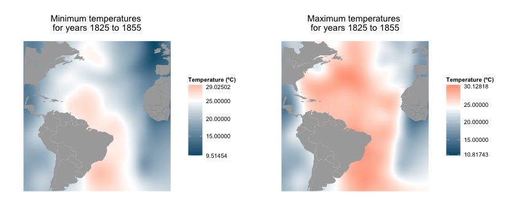
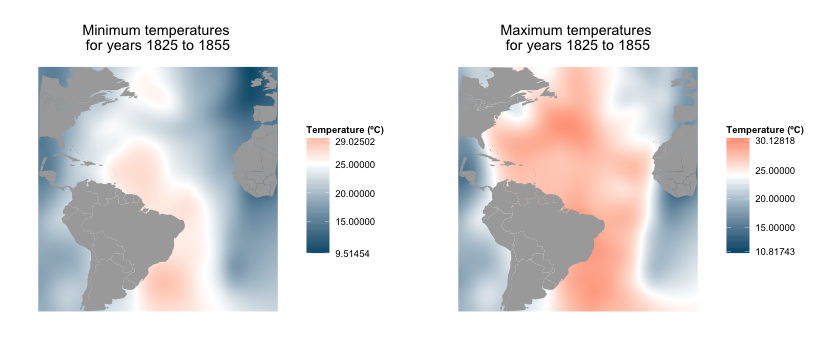

The Climatological database for the world's oceans (CLIWOC) is a project funded by the European Union to study ocean climatology by scanning and analysing ship's logbooks from between 1662 and 1855. Comprising records from a dozen countries and hundreds of ships, the project resulted in the creation of a detailed dataset of more than 280,000 data points giving a rich insight into the rise of sea exploration and crucial information into the climate data of a pre-digitized world.
Each notebook entry has been converted into an observation, and for each of the 280,280 points,
we have access to a large number of information. From the names of the ships, of the captain and of the first
lieutenant, to the observed air and sea temperature, the wind speed and direction, as well as
the geographical coordinates, it is almost possible to recreate the day-to-day life on the ships.
Using those, we can start by representing each of those entries on a world map, and obtain a global and
accurate picture of sea travel and exploration during this period.
The time dimension of the data creates a chronology, that reflects the rise and fall of the successive European empires and their reigns on the seas.
Counting the records however, might result in biased data, as it is doubtful that every ships recorded data with the same frequency (the team responsible for the project was based out of the University of Madrid, and might therefore have had access to a disproportionate amount of data from Spanish ships). Having access to the ship's names, we can instead count those to estimate a sample of each country's fleets at each point in time. Although it is still not guaranteed that the journals from each country are sampled with the same probability for each year, nor across the entire timeline.
There the unending supremacy of the British Empire's fleet appear clearly. We can see the rise and fall of the Spanish Armada, and the end of the French fleet after the crushing defeat at Trafalgar, in 1805.
Below, you can explore the data by nationality and by period, and see how each country fared
on the seas at different moment in time.
(The large number of data points can make the app response somewhat slow, be patient!)
Since the dataset also provides the names of the captains of the ships, it is possible to follow some of the famous expeditions of the times. We can the voyage of James Cook around the globe, follow La Perouse until its disappearance in Oceania, as well as D'Auribeau's expedition that went looking for him.
But, as its name implies, the original purpose of this dataset is to gain access to a previously unexplored period of meteorological data. Indeed, as some of the entries in the journals are accompanied by somewhat accurate readings of temperature, weather, wind speed and other meteorological events, it is possible to reconstruct parts of the weather of this period.
The data is however very sparse. Out of the 280,280 observations, only 56,000 contain a valid temperature reading. That's an average of 560 readings per year, on the entire planet, which is not enough to obtain a really accurate climate model. Nonetheless, we can try to extract some trends for the entire period, and see how temperature extremas might have evolved. If we restrict ourselves to the Atlantic ocean, and analyse larger periods of ten years, some trends might start to appear.
Additionally, we can use the spatial nature of the data to get a distribution of the extreme temperatures in the entire atlantic ocean. We separate the data in 3 distinct periods: 1775-1800, 1800-1825 and 1825-1855, then round the geographical coordinates to create a "grid" of squares of approximately 200,000 km2 then take the max and min temperatures in those squares. We can then fit a surface through all these points over the entire ocean to obtain a continuous distribution.
 

Because of the importance of extreme weather events on a ship, those were also diligently reported by the crew, and we can see the evolution of their occurences during the years:
And just like for the other pieces of data, the geographical dimension allows to place the records of those events on a world map.
All in all, the sparsity of the dataset makes it hard to extract conclusive information on climate from this dataset. The data is likely highly biased towards certain routes and nationalities and different methods of recording entries. To really exploit it would probably require combining it with other sources of data from the same period. Nonetheless, this is probably the first time that it is possible to have access to so much data concerning a period before the advent of digital technology. Many more pieces of information can probably be taken from this data, from a climate science but also historical or sociological perspective.